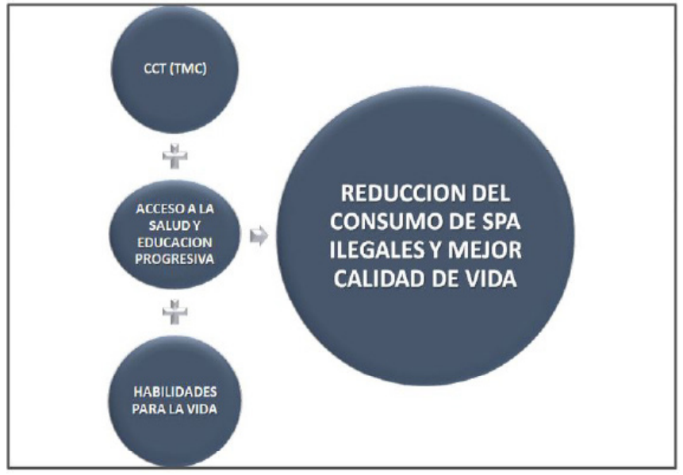

Introducción
América Latina se sigue caracterizando por sus
elevados niveles de inequidad social, factores
que marcan preocupantes índices de pobreza y
pobreza extrema, los cuales no solo obedecen
a problemas económicos, sino que también
intervienen aspectos de índole cultural, racial
y territorial (Expósito, Fernandez, & Velasco,
2017). En este orden, es común evidenciar
que amenazas como la exclusión social, la
alta vulnerabilidad y la inseguridad humana,
hacen diariamente compañía a las personas
que habitan en los lugares con menores
oportunidades de desarrollo (Arriagada, 2000).
Aunque en los últimos años se ha reportado
cierta disminución de la pobreza extrema, la
región sigue siendo la más desigual del mundo
en lo referente al ingreso per cápita (Bárcena,
2016). Siendo una de las causas generadoras,
la falta de capacidad de crear instituciones
propias, originales y definidas que obedezcan
de manera particular y profunda a los desafíos
y problemas de cada Estado, en donde se
puedan construir verdaderas políticas públicas
a partir del involucramiento activo de los
ciudadanos en la toma de decisiones (Becerril,
2015) (Marulanda 2019).
En este orden, aparecen las respuestas de
los gobiernos con el ánimo de contrarrestar
este desafiante fenómeno social, es así
como desde hace ya varias décadas se han
venido implementado programas que buscan
mitigar la pobreza en la región, cuyo enfoque
en un principio se dirigió al subsidio de los
precios de la canasta básica de las familias
en dicha situación; pero a mediados de la
década del noventa, esta perspectiva dio un
giro y los Estados optaron por implementar
programas que buscaran la transferencia de
dinero directamente a las familias en estado
de pobreza, con el objetivo de que estas
invirtieran en su “capital humano” (Barrientos
2019), específicamente en aspectos de salud y
educación como condición, buscando de esta
manera crear una población joven más sana y más educada que pudiera por su propia
cuenta romper con los lasos de pobreza y en
adelante ser autogeneradores de ingresos
(Banco Interamericano de Desarrollo, 2017).
Aunque el concepto de “capital humano”
merece una reflexión profunda sobre su
perspectiva mercantil del tratamiento de los
problemas sociales, no se desvía la idea de
que este tipo de programas sean vistos como
una herramienta que puede romper con los
lasos de pobreza que hoy se transmiten de
una generación a otra (Yanes, 2016).
¿En qué consisten los Programas de
Transferencias Monetarias Condicionadas?
Como se explicó anteriormente, estos
programas son estrategias que buscan
atender el presente para poder garantizar el
futuro de la juventud, dicho de otro modo,
que las personas modifiquen sus formas de
vida, empoderen su vida, se conviertan en una
solución social y que sus jóvenes logren romper
con los lasos de pobreza, son programas
destinados a atender una población definida
con base en sus carencias, conformando
de esta manera grupos poblacionales con
similares características en cuanto a sus
necesidades (Cena & Chahbenderian, 2015).
Igualmente, pueden ser definidos como una
especie de contrato cuyo objetivo es garantizar
unas ayudas a sus firmantes, a cambio de
unos compromisos con el fin de mitigar
los embates de la pobreza en que estos se
encuentran, siendo su principal objetivo la
inserción en el campo productivo a través
del incremento de microemprendimientos,
autoempleo y fortalecimiento del capital
humano mediante acciones como la entrega
de incentivos de bajas cuantías para evitar
que los beneficiarios puedan ser atraídos
por el conformismo y continuar en su
estado inicial de pobreza (Brown, 2016). Del
mismo modo, se pueden entender como las
políticas gubernamentales sobre entregas de
dinero en efectivo destinados a hogares en
condición de vulnerabilidad, los cuales deben estar supeditados al cumplimiento de unos
compromisos relacionados generalmente con
unas metas de desarrollo de los miembros de
su hogar, particularmente.
En este orden, los compromisos asumidos por
los beneficiarios, son las condiciones sobre
los cuales se formaliza la operatividad del
programa las cuales conducen a los padres a
entregar una mejor calidad de vida para sus
hijos, de igual modo la corresponsabilidad que
genera la condición hace a la familia autónoma
para dar solución a sus necesidades; así las
cosas, el Estado se convierte en un socio que
ayuda a la solución de los problemas de los
ciudadanos (Yanes, 2016). De igual modo, la
condicionalidad de estos programas permite
alcanzar resultados positivos en materia de
prevención en salud y rendimiento escolar ya
que la asistencia a controles de salud previos,
desarrollados por el beneficiario en el marco
de su corresponsabilidad, presentan mejoras
en los resultados nutricionales y el adecuado
desarrollo corporal del menor (Guanais,
2015). Lo anterior permite el alcance de
resultados favorables a corto plazo en temas
de incremento de la asistencia y permanencia
escolar, generando un impacto positivo en la
promoción escolar y satisfactoria terminación
de la formación secundaria en el corto y
mediano plazo, tal es el caso del programa
Familias en Acción en Colombia (Molina,
Barham, Macours, Maluccio, & Stampini, 2019).
Los autores antes mencionados puntualizan
que los programas de transferencias
monetarias condicionadas se han convertido
en una punta de lanza en la lucha contra la
pobreza en los países de América Latina y
otros países del mundo y que en el caso de
la educación, se evidencia un impacto positivo
en materia del control de la deserción escolar
en los beneficiarios de dichos programas.
Algunos efectos de las transferencias
monetarias condicionadas en las familias
Además de los resultados en temas de salud y
educación, se ha evidenciado que las familias
beneficiadas con estos programas presentaron
reducción considerable en el trabajo infantil,
incremento en los niveles de consumo de los
hogares y un leve aumento en los niveles de
ahorro e inversión (Kabeer & Waddington,
2015). De igual modo, es probable que las
transferencias monetarias permiten a los
hogares incluir a su cesta básica algunos
productos de mayor contenido nutritivo, lo
cual revierte en mejor calidad nutricional y
mayor estado saludable aunado al apoyo en
este tema por parte de los profesionales de la
salud (García , y otros, 2019). Del mismo modo,
algunos estudios evidencian que las entregas
de incentivos económicos condicionados
en las poblaciones rurales, en conjunto con
una adecuada sensibilización en temas de
nutrición, genera impactos positivos en las
prácticas alimentarias de los hogares (Zhang,
y otros, 2018). En este orden, es importante
resaltar que el éxito del desarrollo de las
estrategias de sensibilización en temas de
salud y nutrición se da en gran medida gracias
al compromiso adquirido por las Entidades de
salud y la adecuada articulación de estas con los
operadores de los programas de TMC, para lo
cual es importante tener en cuenta las técnicas
adecuadas de una oportuna comunicación
asertiva que permita optimizar esfuerzos a la
hora de expresar, proponer, defender y acordar
cada una de las estrategias a desarrollar
dentro de un contexto organizacional (Lesmes,
Barrientos, & Cordero, 2020)
Lo anterior, presenta un resultado positivo
en el corto plazo, en materia redistributiva
y económica de los hogares; aunque no
deja de ser un tanto escaso de evidencias
los resultados en materia de reducción de
la pobreza que puedan garantizar estos
programas en el largo plazo, salvo el tema de educación; por lo que algunos expertos
proponen estrategias como el ingreso básico
que no condicione a los hogares a ciertos
cumplimientos, sino que tenga en cuenta
muchas otras variables causantes de la pobreza
extrema (Saucedo, Kadelbach, & Mata, 2018).
En cuanto a los resultados en el largo plazo
en temas educativos, se evidencia impacto
positivo en el acceso a la educación superior,
en la progresión educativa y terminación de la
carrera en el tiempo estipulado (Barrera, Linden,
& Saavedra, 2019). Entonces, si los efectos
distributivos que causan estos programas
llegan a producir cambios en las relaciones
sociales de los hogares, se podría afirmar que
se ha generado un vínculo importante entre la
relación proporcional del dinero recibido y el
incremento de la capacidad de consumo de las
familias, lo cual reitera el impacto positivo de
las Transferencias Monetarias Condicionadas
en el corto plazo, ya que no solamente es
el incremento del consumo; sino todo ese
conjunto de estímulos psicológicos que puede
generar en las personas esa sensación de
mejora en sus condiciones de vida (Wilkis &
Hornes, 2017).
De otro lado, existen evidencias sobre el
impacto positivo que estos programas han
generado en la reducción de conflictos sociales
y en la consolidación de espacios de paz para
muchas regiones en situación de violencia
(Crost, Felter, & Johnston, 2016). Lo anterior,
podría ser una excelente oportunidad para
que países como Colombia puedan afianzar
acuerdos de paz y procesos de post-conflicto
previamente pactados, los cuales como es
bien sabido, impactan en el bienestar de las
familias en situación de pobreza que son las
que finalmente llevan el mayor peso de los
desastres generados por los conflictos sociales.
Nociones sobre las habilidades para la vida
y su relación con las TMC
Las habilidades para la vida se definen como
el conjunto de intervenciones que buscan un
mejoramiento continuo de la calidad de vida
y bienestar de los individuos, las cuales son
adquiridas a través de enseñanza-aprendizaje
y permiten entre otras cosas, mejorar el
manejo de las emociones, estados de
ánimo, el fortalecimiento de la autoestima y
confianza en sí mismo; igualmente, enseñan
a las personas en nuestro caso a los jóvenes,
a construir ideas sólidas, ser autónomos y
redescubrir sus propias destrezas (Acevedo,
Londoño-Vasquez, & Restrepo-Ochoa, 2017).
Igualmente, son definidas como el conjunto
de elementos que facilitan el desarrollo social
e individual, permiten prevenir situaciones
adversas y garantizar los derechos de
las personas; dichos elementos se han
implementado a nivel global sirviendo como
herramienta de contención primaria a los
riesgos del consumo de sustancias psicoactivas
en los jóvenes (Carrillo, Rivera, & Forgiony,
2018).
En este orden, se ha observado que en países
como Colombia se incluyen las habilidades
para la vida como parte de uno de sus
componentes dentro de las TMC, las cuales
hacen referencia a las competencias que
necesitan los jóvenes para mejorar su nivel
de interacción con su entorno y orientar su
proyecto de vida (Barazeta, 2016). Así mismo,
una investigación realizada con un grupo de
jóvenes entre 16 y 21 años de una comunidad
en San Francisco, miembros de localidades
marginales y con altos índices de presencia de
pandillas y embarazos prematuros; quienes
mediante la inscripción a un programa de
transferencias monetarias condicionadas en
donde se aplicaban módulos de habilidades
para la vida, arrojó resultados positivos en
cuanto a la disminución del porcentaje de uso
de sustancias como el alcohol y la marihuana y por otro lado la reducción de embarazos
prematuros (Minnis, y otros, 2014). Igualmente,
Valencia (2008) plantea que la participación en
eventos comunitarios de las madres titulares
beneficiarias de estos programas, fortalece
las relaciones sociales, genera liderazgo y
empoderamiento entre las asistentes, siendo
una posibilidad de escape a las rutinas
cada vez que pueden tener encuentros
comunitarios dentro del marco de desarrollo
de actividades del programa. En su orden, otro
estudio acerca de la implementación de un
programa de TMC dirigido a mujeres jóvenes
entre 13 y 14 años de una región de Liberia;
plantea que entrenar a las adolescentes sobre
habilidades para la vida fortalece su identidad
de género y su salud sexual y reproductiva
(Özler, y otros, 2020). En consecuencia,
el fortalecimiento de las capacidades, las
actitudes y habilidades, proporcionan al
individuo destrezas adecuadas que ayudan a
evitar el contacto directo con el consumo de
sustancias psicoactivas (Batllori Aguilá, 2016).
De otro lado, es importante concretar que
se conciben las habilidades sociales como
el conjunto de comportamientos que usan
los individuos para solucionar las diversas
situaciones presentadas en su vida y de
esta manera poder alcanzar sus metas, bajo
principios de respeto a los derechos de las
demás personas (Betancourth, Zambrano,
Ceballos, Benavides, & Villota, 2017)
Las sustancias psicoactivas. Una amenaza
a la familia y la juventud
Para entrar en contexto en este tema,
debemos saber que se denomina sustancias
psicoactivas a aquellas que son ingeridas
de manera autónoma por un individuo sin
fines medicinales, debido a que le generan
efectos mentales, alteran la percepción de la
realidad, conciencia, actitud comportamental
y estado de ánimo del consumidor (Córdoba,
Betancourth, & Tacán, 2017). En este orden,
las evidencias demuestran que el alcohol y el tabaco son comúnmente los antecesores
al inicio del consumo de sustancias como el
cannabis y otras de uso ilícito, siendo la etapa
de la juventud (10 a 24 años), en donde existe
un mayor riesgo de convertirse en consumidor,
para lo cual el entorno social del joven es un
factor altamente incidente en el inicio de esta
práctica (Degenhardt, Stockings, Patton, Hall,
& Lynskey, 2016). Igualmente, dentro de las
sustancias psicoactivas existe un subconjunto
denominado nuevas sustancias psicoactivas
(NSP), conocidas popularmente como drogas
“inteligentes”, “de diseño” o “recreativas”;
cuyo diseño obedece esencialmente a la
evasión de la legislación respectiva sobre
sustancias de uso ilegal, incrementándose
durante los últimos años de manera alarmante
y convirtiéndose en una grave amenaza para la
salud pública toda vez que las investigaciones
al respecto son escasas y estas sustancias
se mimetizan con facilidad dentro de los
fármacos legalmente aceptados (Ventura,
Carvalho, & Dinis-Oliveira, 2018). De otro
lado, la UNODC (2019) señala que alrededor
del 6% de la población entre 15 y 64 años han
sido consumidores de drogas no permitidas,
manteniéndose una tendencia de incremento
de al menos el 30% en los últimos años, el
informe resalta que los opioides sintéticos
como el tramadol y el Fentanilo, siguen siendo
una considerable amenaza para la salud y
su uso se ha masificado. En este orden, el
consumo de las sustancias psicoactivas, sobre
todo en los jóvenes ha presentado incrementos
en los últimos años, razón por la cual muchos
expertos plantean la tesis de que mientras
no exista voluntad real por parte de actores
gubernamentales, es muy difícil lograr los
resultados deseados en materia de prevención
(Barroso & Benitez, 2020). Así las cosas, los
estudios demuestran que el inicio temprano del
consumo de estas sustancias en el ser humano,
afecta seriamente su desarrollo mental y
social, incrementa su nivel de vulnerabilidad
con sus consecuencias posteriores como
rompimiento de la progresividad académica,
violencia intrafamiliar, abuso y prácticas sexuales riesgosas entre otros; razón por la
cual es importante implementar estrategias
que conduzcan a retrasar el inicio del consumo
o en lo posible evitarlo (Kristjansson, y otros,
2020). En consecuencia, es importante seguir
insistiendo en alternativas contundentes
que permitan rescatar a los individuos,
especialmente a los jóvenes de las manos de
este fenómeno que degrada totalmente su
condición humana, los esclaviza y construye su
poderío sobre la desgracia de quienes caen en
este (Barroso-Carrillo, 2020).
Por lo tanto, una propuesta planteada por
expertos es el fortalecimiento del componente
de habilidades para la vida, tomado como una
barrera de contención para la prevención de
inicio de prácticas de consumo y desarrollo
de habilidades que permitan al joven evadir
la influencia de sus pares, aunque la crítica
presentada a esta propuesta es que falta mucho
más desarrollo y fortalecimiento al conjunto
de las habilidades sociales (Díaz & Mejía,
2018). En este orden, es necesario fortalecer
la práctica de este tipo de componentes
que permitan generar cambios profundos y
eludir o enfrentar sabiamente las amenazas
del entorno a nuestros jóvenes; pues como
lo plantean Barrientos & Lesmes (2020) todo
deseo de éxito nace de una necesidad de
transformación que se inicia con un cambio de
mentalidad en los individuos, dejando de un
lado la imitación de patrones o conductas.
¿Impactan positivamente los programas
TMC en la reducción del consumo de
sustancias ilegales?
Como ya lo hemos mencionado, las TMC
condicionan la entrega de efectivo al
cumplimiento de compromisos por parte de
las familias, entre ellos la educación de sus
hijos y la asistencia a los requerimientos en
temas de salud relacionados con la prevención.
En este orden, se estaría garantizando una
mejor salud y mayor permanencia de los niños
y jóvenes en las Instituciones Educativas, por lo que estarían con menos tiempo libre al estar
ocupados en sus quehaceres educativos, lo
cual podría estar garantizando un retraso en el
inicio del consumo, o en el mejor de los casos
se lograría evitar; ya que una de las mejores
estrategias de prevención de consumo en los
jóvenes es no prohibir, sino por el contrario,
concientizarlos en que estos temas pueden ser
retrasados y que ya llegará el día apropiado
si así lo desean (Kristjansson, y otros, 2020).
Del mismo modo, Chioda, De Mello, & Soares
(2016) concluyen que en aquellos lugares en
donde existen Instituciones Educativas con
mayor cobertura de jóvenes beneficiarios por
programas de TMC, se presenta reducción del
índice delincuencial en el vecindario de dicha
Institución, plantean que la reducción de la
desigualdad aportada por estos programas,
va acompañada por la disminución de la
criminalidad, entendiéndose esta por toda
clase de acciones realizadas por fuera de las
normas respectivas.
De otro lado, quienes cuestionan la
condicionalidad, argumentan que esta se
sustenta sobre fundamentos de sospecha
y desconfianza, llegando a influir sobre las
obligaciones y compromisos de protección
de las familias y llaman a que estas sean
vinculadas como miembros activos en los
procesos de control y evaluación de los
programas (García-Valverde, 2017). A pesar de
sus cuestionamientos, el anterior autor resalta
que la interferencia de la condicionalidad,
maneja un margen amplio para la educación
de los niños, garantizando autonomía a las
familias y promoviendo inclusión e igualdad
de oportunidades, lo cual estimula de
alguna manera a muchos niños y jóvenes en
condiciones extremas a cambiar su paradigma
de proyecto de vida y a interesarse por
mejores oportunidades promoviendo un
fortalecimiento del capital social y desde
luego apuntando hacia la consolidación y
construcción de tejido social (Barroso & Benitez,
2020). Del mismo modo, de Walque (2020)
sostiene que las TMC logran ser de utilidad cuando se busca prevenir conductas o
prácticas no saludables que presentan alto
grado de dificultad para controlar, el autor
afirma que la idea de utilizar incentivos
económicos ayuda en la prevención de la
masificación de este tipo de conductas y
cita como ejemplo la prevención del VIH en
el cual, a través estudios experimentales
a menor escala demuestran efectividad en
dichos programas.
Discusión y Resultados
Es imperioso seguir buscando alternativas
que nos conduzcan a evitar que nuestra
generación siga siendo devorada por la
drogadicción y las consecuencias a que
estas conlleva, pues a pesar de los diversos
estudios, pareciera que nuestra sociedad
cada día cede terreno ante este tipo de
fenómenos, ya que las acciones adelantadas
por las naciones se han quedado cortas
en resultados respecto a los recursos
invertidos y a las metas que se han trazado
con su implementación (Oficina de las
Naciones Unidas Contra la Droga y el Delito,
2019). En consecuencia, los programas de
Transferencias Monetarias Condicionadas
son una herramienta importante la
cual, muchos Estados han venido
implementando con el principal objetivo
de combatir la condición de pobreza de
sus ciudadanos y como resultados alternos
se ha evidenciado que estos han ayudado
a la disminución del índice de violencia y
con ello la reducción del porcentaje de
consumidores de sustancias psicoactivas
(Chioda, De Mello, & Soares, 2016) (Crost,
Felter, & Johnston, 2016). Por lo tanto,
estos programas fueron diseñados con el
fin único de erradicar la pobreza a través de
la entrega de incentivos bajo condiciones y
garantía de corresponsabilidad de quienes
se benefician.
De otro lado, es importante tener en
cuenta que una de las principales causas por las cuales muchos niños y jóvenes toman el
camino de la calle cayendo en el consumo de
sustancias psicoactivas, es precisamente la falta
de oportunidades, el ver frenados sus sueños y
desvanecidas sus esperanzas de consolidar su
proyecto de vida (Barroso-Carrillo, 2020). Por
lo anteriormente expuesto, es evidente que en
el corto plazo el impacto de los programas de
Transferencias Monetarias Condicionadas es
favorable de manera integral en el desarrollo
de la juventud y ayudan positivamente en la
consolidación del tejido social, alejando a
los individuos del contacto con situaciones
que puedan torpedear su formación como
futuros ciudadanos que aporten activamente
al desarrollo de su entorno.
De igual modo, es importante que junto a los
programas CCT (TMC), se active el componente
de habilidades para la vida, esencial para
reforzar y garantizar el logro de los objetivos
propuestos por estos programas ya que genera
empoderamiento en el individuo, fortalece su
autonomía y confianza en sí mismo a través de
la consolidación de ideas sólidas sobre sobre
su proyecto personal (Acevedo, LondoñoVasquez, & Restrepo-Ochoa, 2017). Por lo
tanto, al ser las habilidades para la vida un
conjunto de elementos que buscan fortalecer
el desarrollo del individuo tanto en el campo
personal como en el social, logran que este
se prepare para hacer frente a los diferentes
desafíos y amenazas presentes en su entorno,
garantizándose de esta manera la promoción
de sus derechos y el fortalecimiento al
cumplimiento de sus deberes como futuro
ciudadano; estos elementos son una
herramienta importante que ayuda a disminuir
el riesgo de que los jóvenes puedan padecer las
consecuencias de las amenazas presentes en
su medio, entre ellas el consumo de sustancias
ilegales (Carrillo, Rivera, & Forgiony, 2018). En
consecuencia, es evidente que las habilidades
para la vida fortalecen el empoderamiento y
generan liderazgo en el individuo, a través de
la mejora de su nivel de confianza en si mismo
y su autoestima; aunque también es sabido que falta mayor desarrollo y fortalecimiento
al conjunto de habilidades para la vida; un
componente al que se debe mirar con mayor
atención y asignar mayores recursos.

Figura 1. Impacto de las CCT en la reducción del consumo de SPA. Elaboración
propia.
Conclusiones
La falta de oportunidades y los efectos que
genera la condición de pobreza en las familias,
son elementos que exponen los jóvenes a la
vulnerabilidad, facilitando que sean alcanzados
por las amenazas de su entorno, entre ellas la
violencia y el consumo de sustancias de uso
ilegal. Situación que afecta el bienestar de las
comunidades, destruye el tejido social y afecta
negativamente la consolidación del desarrollo
de una sociedad.
Los programas TMC buscan la erradicación de
la pobreza y el rompimiento de su transmisión
intergeneracional, a través de las mejoras
de condiciones de salud y la progresividad
académica de los niños y adolescentes;
fortaleciendo de esta manera el capital
humano para que en el futuro sean elementos
activos en el desarrollo y la generación de
ingresos.
Los programas de TMC (CCT), impactan
positivamente en el mejoramiento de las
condiciones de salud y la educación en el corto y mediano plazo, lo que hace que al
aumentar la permanencia escolar, se presenten
disminuciones en los índices de delincuencia
juvenil o por lo menos se garantice un retraso
en la edad de inicio del consumo de sustancias
psicoactivas.
Para garantizar una verdadera reducción del
consumo de SPA ilegales y una mejor calidad
de vida en los niños y jóvenes, es necesario
que las TMC vayan de la mano de además de
salud y educación progresiva, con un robusto
componente de habilidades para la vida
durante todo el tiempo de acompañamiento
que tenga el programa sobre el individuo
beneficiario.
Es evidente que una herramienta importante
en la prevención del consumo de sustancias
ilegales, es la formación de los jóvenes sobre
aspectos relacionados con sus capacidades,
valores y desarrollo de sus destrezas, lo
cual ayuda al joven a desarrollar de manera
oportuna las respectivas habilidades que
permiten evitar el contacto directo e inicio del
consumo de estas sustancias.
Referencias
- Acevedo, H., Londoño-Vasquez, D., & RestrepoOchoa, D. (2017). Habilidades para la vida
en jóvenes universitarios: una experiencia
investigativa en Antioquia. Katharsis:
Revista de ciencias sociales, 24, 157-182.
Obtenido de https://dialnet.unirioja.es/servlet/articulo?codigo=6134479
- Arriagada, C. (2000). Pobreza en América Latina:
nuevos escenarios y desafíos de políticas para
el habitat urbano. Comisión Económica para
América Latina y el Caribe. Santiago de Chile:
CEPAL. Obtenido de https://repositorio.cepal.org/handle/11362/5711
- Banco Interamericano de Desarrollo. (2017). Así
funcionan las transferencias condicionadas. Buenas prácticas a 20 años de implementación.
(P. Ibarrarán, N. Medellín, F. Regalia, &
M. Stampini, Edits.) Washington: BID.
Obtenido de https://books.google.es/GDwAAQBAJ&lpg=PR1&dq=impacto
- Barazeta, L. A. (2016). Análisis de las transferencias
monetarias en Colombia 2003-2016: Un estado
del arte. Universidad de la Salle. Bogotá:
Facultad de ciencias económicas y sociales.
Obtenido de https://ciencia.lasalle.edu.co/economia/354
- Bárcena, A. (25 de Enero de 2016). América
Latina y el Caribe es la región más desigual
del mundo. ¿Cómo solucionarlo? Columna
de opinión. Obtenido de https://www.cepal.org/es/articulos/2016-america-latina-caribees-la-region-mas-desigual-mundo-comosolucionarlo
- Barrera, F., Linden, L., & Saavedra, J. (2019).
Medium- and Long-Term Educational
Consequences of Alternative Conditional Cash
Transfer Designs: Experimental Evidence
from Colombia. American Economic Journal:
Applied Economics, 11(3), 54-91. doi: https://doi.org/10.1257/app.20170008
- Barrientos-Monsalve, E., & Lesmes-Silva, A.
(2020). Strategic management innovation in
Asian organizations. Revista Sostenibilidad,
Tecnología y Humanismo, 11(2), 18-30.
doi: https://doi.org/10.25213/2216-1872.52
- Barrientos- Monsalve, E. J., Hurtado-Hernández,
L. J., Lesmes-Silva, A. karina, & Duarte-Rey,
D. M. (2019). ¿Coaching en las empresas? La
gerencia del coaching en las organizaciones
contemporáneas. Mundo FESC, 10(S1), 223-236. Recuperado a partir de https://www.fesc.edu.co/Revistas/OJS/index
- Barroso, L., & Benitez, M. (2020). Propuesta
de prevención del consumo de sustancias
psicoactivas en los jóvenes desde un enfoque
comunitario. Sostenibilidad, Tecnología y
Humanismo, 11(1), 65-78. doi: https://doi.org/10.25213/2216-1872.37
- Barroso-Carrillo, L. (2020). Del hogar a la calle: Un
camino sin esperanza bajo el oscuro mundo de
adicción a las sustancias psicoactivas. Revista
Sostenibilidad, Tecnología y Humanismo,
11(2), 87-96. doi: https://doi.org/10.25213/2216-1872.98
- Batllori Aguilá, A. (2016). El Consumo de drogas
entre Adolescentes, Prevención en la Escuela
y en la Familia. Madrid, España: Narcea
Ediciones. Recuperado el 16 de Octubre
de 2019, de https://elibro.net/es/ereader/fesc/46250?page=24
- Becerril, C. I. (2015). El papel del Estado en el
alivio a la pobreza en la era neoliberal Una
aproximación teórica. Revista Mexicana
de Ciencias Políticas y Sociales, 60(225),
369-393. doi: https://doi.org/10.1016/S0185-1918(15)30030-1
- Betancourth, S., Zambrano, C., Ceballos, A. K.,
Benavides, V., & Villota, N. (2017). Habilidades
sociales relacionadas con el proceso de
comunicación en una muestra de adolescentes.
Psicoespacios, 11(18), 133-147. doi: https://doi.org/10.25057/21452776.898
- Brown, B. (2016). Sistema de Protección social
y Programas de Transferencias Monetarias
Condicionadas. “El paradigma de activación”
en Argentina 2003-2013. Buenos Aires:
Universidad de Buenos Aires. Obtenido de
http://www.ceil-conicet.gov.ar/wp-content/uploads/2017/12/2017brown.pdf
- Carballo, I., & Vinocur, R. (2017). Transferencias
monetarias condicionadas e inclusión
financiera en América Latina: una primera
aproximación regional. Contexto, 6, 1-22.
Obtenido de http://contexto.ugca.edu.co/index.php/contexto/article/view/796/1188#
- Carrillo, S., Rivera, D., & Forgiony, J. (2018).
Habilidades para la vida como elementos
en la promoción y educación para la salud
en los adolescentes y jóvenes. Revista
AVFT, 38(5), 567-572. Obtenido de http://www.revistaavft.com/images/revistas/2018/avft_5_2018/22habilidades_vida_elementos_elementos.pdf
- Cena, R., & Chahbenderian, F. (2015). El
abordaje estatal de la pobreza en Programas
de Transferencias Monetarias Condicionadas.
Revista Latinoamericana de Ciencias Sociales,
Niñez y Juventud, 13(1), 123-136. Obtenido
de http://www.scielo.org.co/pdf/rlcs/v13n1/v13n1a07.pdf
- Chioda, L., De Mello, J., & Soares, R. (2016).
Spillovers from conditional cash transfer
programs: Bolsa Família and crime in urban
Brazil. Economics of Education Review,
54, 306-320. doi: https://doi.org/10.1016/j.econedurev.2015.04.005
- Córdoba, E. G., Betancourth, S., & Tacán, L. E.
(2017). Consumo de sustancias psicoactivas en
una universidad privada de Pasto, Colombia.
Psicogente, 20(38), 308-319. doi: https://doi.org/10.17081/psico.20.38.2552
- Crost, B., Felter, J. H., & Johnston, P. B. (2016).
Conditional cash transfers, civil conflict and
insurgent influence: Experimental evidence
from the Philippines. Journal of Development
Economics, 118, 171-182. doi: https://doi.org/10.1016/j.jdeveco.2015.08.005
- de Walque, D. (2020). The use of financial incentives to prevent unhealthy behaviors: A review.
Social Science & Medicine, 261. doi: https://doi.org/10.1016/j.socscimed.2020.113236
- Degenhardt, L., Stockings, E., Patton, G., Hall, W.,
& Lynskey, M. (2016). The increasing global
health priority of substance use in young people.
The Lancet Psychiatry, 3(3), 251-264. doi: https://doi.org/10.1016/S2215-0366(15)00508-8
- Díaz, M. V., & Mejía, S. I. (2018). Desarrollo
de habilidades para la vida en la prevención
del consumo de sustancias psicoactivas:
un enfoque crítico al modelo existente. El
ágora USB, 18(1), 203-210. doi: http://dx.doi.org/10.21500/16578031.3450
- Expósito, A., Fernandez, J., & Velasco, F.
(2017). Crecimiento económico, pobreza y
desigualdad: Un análisis de eficiencia para
América Latina del Siglo XXI. Revista de
Economía Mundial(47), 117-138. Obtenido de
https://www.redalyc.org/pdf/866/86654076005.pdf
- García , A., Neufeld, L., Bonvecchio, A., Fernández,
A. C., Mejía, F., García, R., & Rivera, J.
(2019). Closing the Nutrition Impact Gap
Using Program Impact Pathway Analyses to
Inform the Need for Program Modifications in
Mexico’s Conditional Cash Transfer Program.
The Journal of Nutrition, 149(1), 2281S-2289S.
doi: https://doi.org/10.1093/jn/nxz169
- García-Valverde, F. (2017). Responsabilidad
y legitimidad en las transferencias
monetarias condicionadas. Diánoia,
62(79), 193-215. Obtenido de http://www.scielo.org.mx/scielo.php?script=sci_arttext&pid=S0185-24502017000200193
- Guanais, F. C. (2015). The Combined Effects of
the Expansion of Primary Health Care and
Conditional Cash Transfers on Infant Mortality
in Brazil, 1998–2010. American Journal of Public Health, 105(S4), 593-599. doi: https://doi.org/10.2105/AJPH.2013.301452r
- Kabeer, N., & Waddington, H. (2015). Economic
impacts of conditional cash transfer
programmes: a systematic review and metaanalysis. Journal of Development Effectiveness,
7(3), 290-303. doi: https://doi.org/10.1080/19439342.2015.1068833
- Kristjansson, A., Mann, M., Sigfusson, J.,
Thorisdottir, I., Allegrante, J., & Sigfusdottir,
I. (2020). Principios Directrices y Desarrollo
del Modelo Islandés para la Prevención del
Uso de Sustancias en Adolescentes. Health
Promotion Practice, 20(10), 1-8. doi: https://doi.org/10.1177/1524839919899078
- Lesmes, A. K., Barrientos, E. J., & Cordero, M.
C. (2020). Comunicación asertiva ¿estrategia
de competitividad empresarial? Aibi revista
de investigación, administración e ingeniería,
8(1), 147-153. Obtenido de https://core.ac.uk/download/pdf/327164011.pdf
- Minnis, A., vanDommelen-Gonzalez, E., Luecke,
E., Dow, W., Bautista-Arredondo, S., &
Padian , N. (2014). Yo Puedo A Conditional
Cash Transfer and Life Skills Intervention to
Promote Adolescent Sexual Health: Results
of a Randomized Feasibility Study in San
Francisco. Journal of Adolescent Health,
55(1), 85-92. doi: https://doi.org/10.1016/j.jadohealth.2013.12.007
- Molina, T., Barham, T., Macours, K., Maluccio,
J., & Stampini, M. (2019). Long-Term Impacts
of Conditional Cash Transfers: Review of the
Evidence . The World Bank Research Observer,
- Niebles Núñez, L., De La Ossa Guerra, S. J., &
González Martínez, K. D. (2019). Gestión
humana en pymes: herramientas para
organizaciones altamente efectivas. Aglala,
10(2), 111-121. http://revistas.curnvirtual.edu.co/index.php/aglala/article/view/143734(1), 119-159.
doi: https://doi.org/10.1093/wbro/lky005
- Oficina de las Naciones Unidas Contra la Droga y
el Delito. (2019). Primer resumen, conclusiones
y consecuencias en materia de políticas del
informe mundial sobre las drogas 2019. New
York: UNODC Research. Obtenido de https://wdr.unodc.org/wdr2019/prelaunch/WDR2019_B1_S.pdf
- Özler, B., Hallman, K., Guimond, M.-F., Kelvin,
E., Rogers, M., & Karnley, E. (2020). Girl
Empower – A gender transformative mentoring
and cash transfer intervention to promote
adolescent wellbeing: Impact findings from a
cluster-randomized controlled trial in Liberia.
SSM - Population Health, 10(100527), 100527.
doi: https://doi.org/10.1016/j.ssmph.2019.100527
- Saucedo, O. A., Kadelbach, V., & Mata, L. (2018).
Effects of Conditional Cash Transfers (CCT)
in Anti-Poverty Programs. An Empirical
Approach with Panel Data for the Mexican
Case of PROSPERA-Oportunidades (2002–
2012). Economies, 6(2), 29-42. doi: https://doi.org/10.3390/economies6020029
- Romero, Z. (2018). Lineamientos estratégicos
para la optimización del clima organizacional
de la dirección sectorial de control de
la administración descentralizada de la
contraloría del Estado Mérida. Conocimiento
Global, 3(1), 56-69. Recuperado a partir de
http://conocimientoglobal.org/revista/index.php/cglobal/article/view/28
- Valencia-Lomelí, E. (2008). Conditional Cash
Transfers as Social Policy in Latin America:
An Assessment of their Contributions and
Limitations. Annual Reviews, 34, 475-
499. doi: https://doi.org/10.1146/annurev.soc.34.040507.134537
- Ventura, L., Carvalho, F., & Dinis-Oliveira,
R. J. (2018). Opioids in the Frame of New
Psychoactive Substances Network: A Complex Pharmacological and Toxicological Issue.
Current Molecular Pharmacology, 11(2),
97-108. doi: https://doi.org/10.2174/1874467210666170704110146
- Wilkis, A., & Hornes, M. (Enero de 2017).
Negociando la inclusión al mercado de
consumo: Los programas de transferencias
condicionadas de dinero y el orden familiar.
Civitas, Revista de Ciências Sociais, 17(1),
61-78. doi: https://doi.org/10.15448/1984-7289.2017.1.24815
- Yanes, P. (2016). ¿De las transferencias
monetarias condicioanadas al ingreso
ciudadano universal? Acta Sociológica,
70, 129-149. doi: https://doi.org/10.1016/j.acso.2017.01.006
- Zhang, Y., Ji, M., Zou, J., Yuan, T., Deng,
J., Yang, L., . . . Lin, Q. (2018). Effect of
a Conditional Cash Transfer Program
on Nutritional Knowledge and Food
Practices among Caregivers of 3–5-YearOld Left-Behind Children in the Rural
Hunan Province. International Journal of
Environmental Research and Public Health,
15(3), 525-537. doi: https://doi.org/10.3390/ijerph15030525